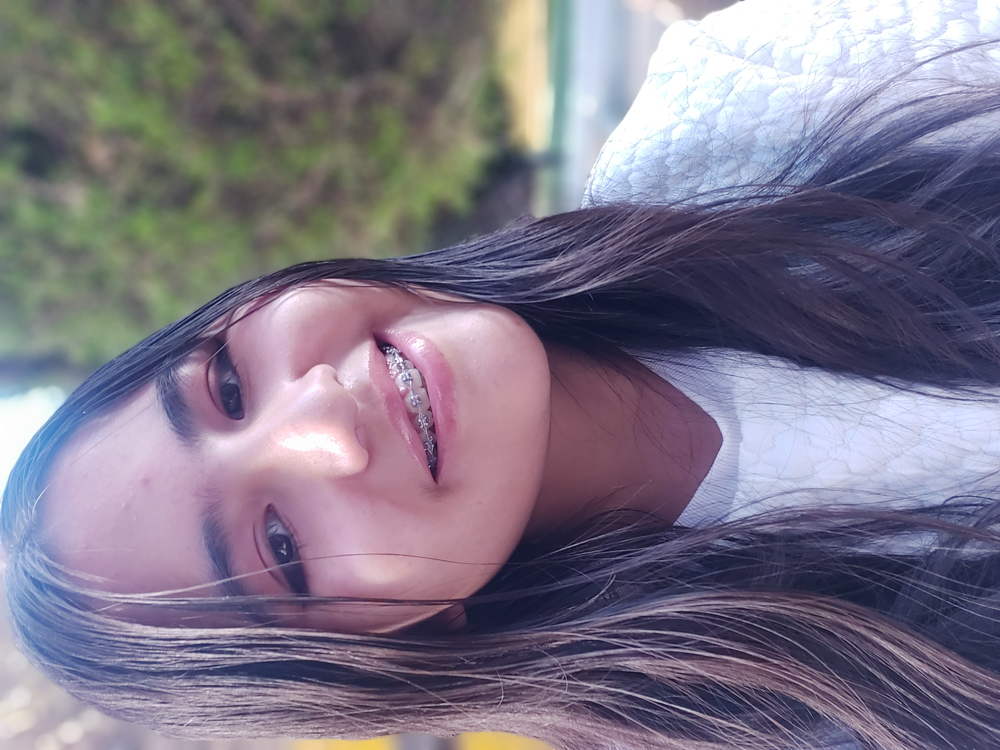
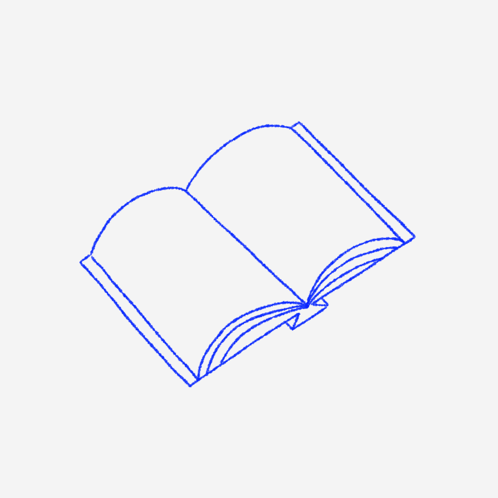

Yo
2. Sobre mí
Mi nombre es Lizet, pero la mayoría me llama Liz. Amo dibujar y leer, prefiero el frío al calor y suelo tener mucho sueño.
3. Gustos e intereses

Sobre mí

Olivia
4. Algo que me inspira: Olivia Rodrigo
Olivia Rodrigo es mi artista favorita. Su música siempre ha conectado conmigo a un nivel muy personal. Por otra parte, admiro su creatividad y filosofía artística.